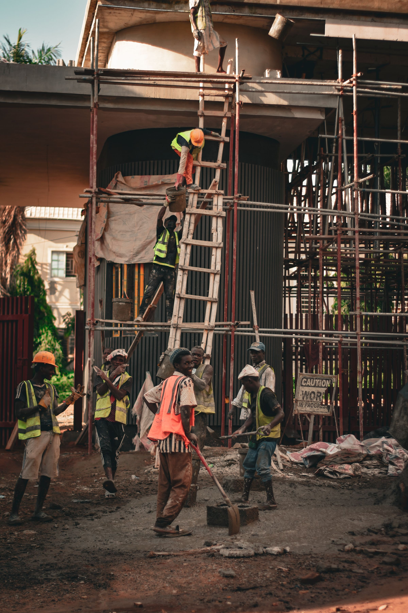
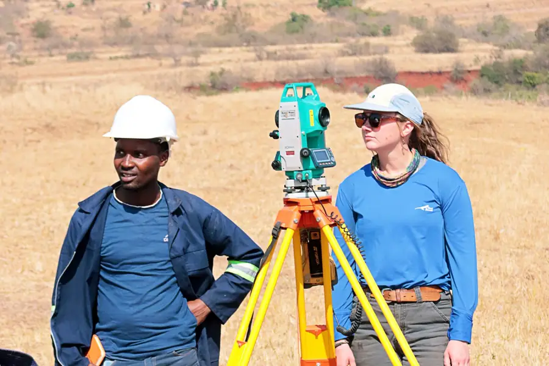
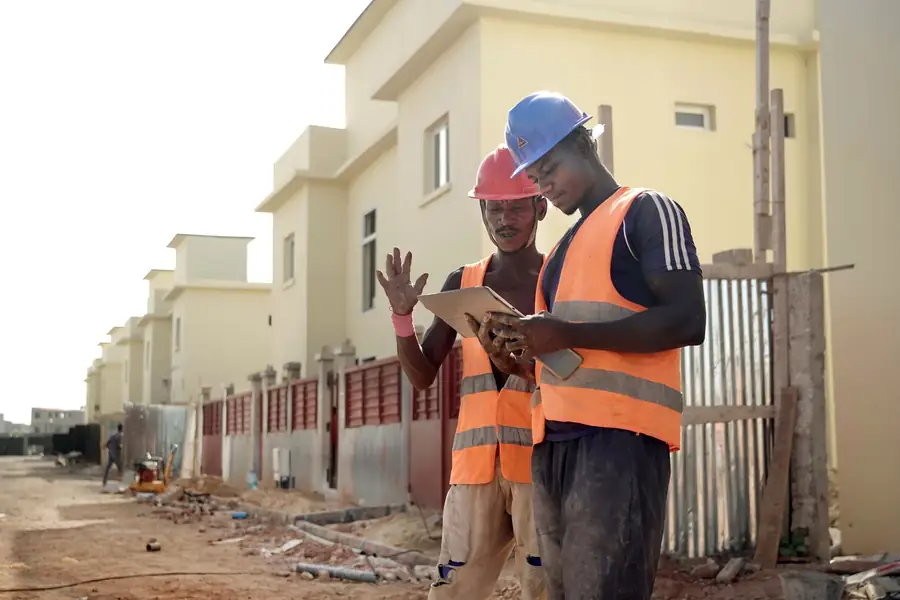
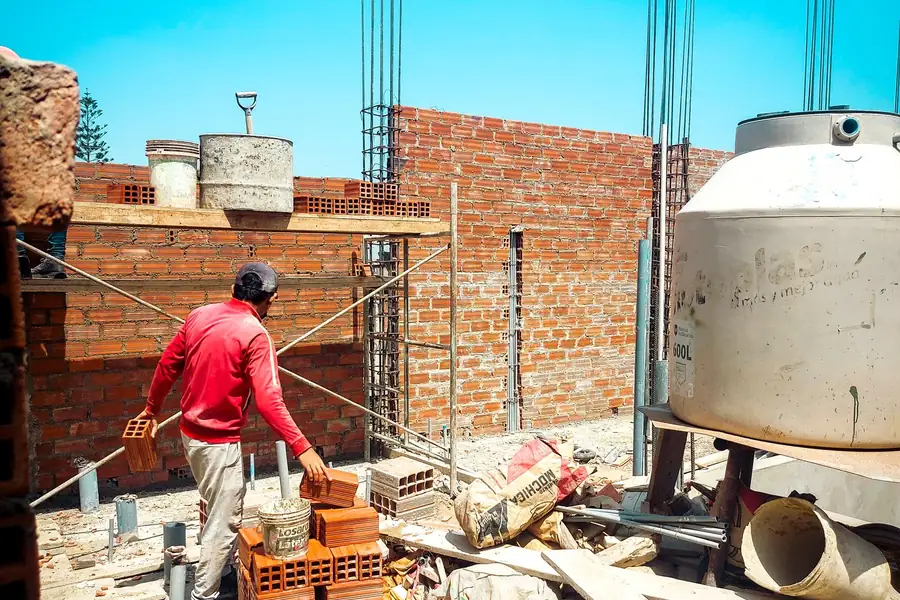
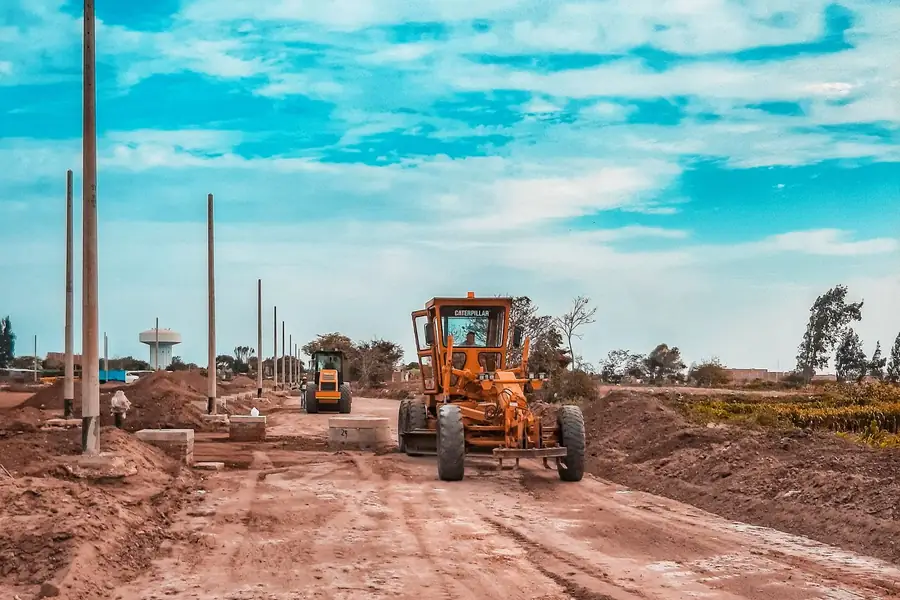
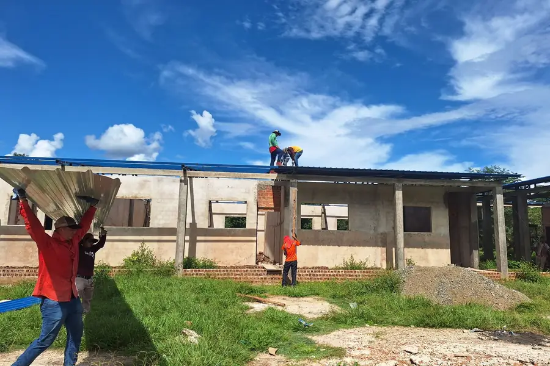
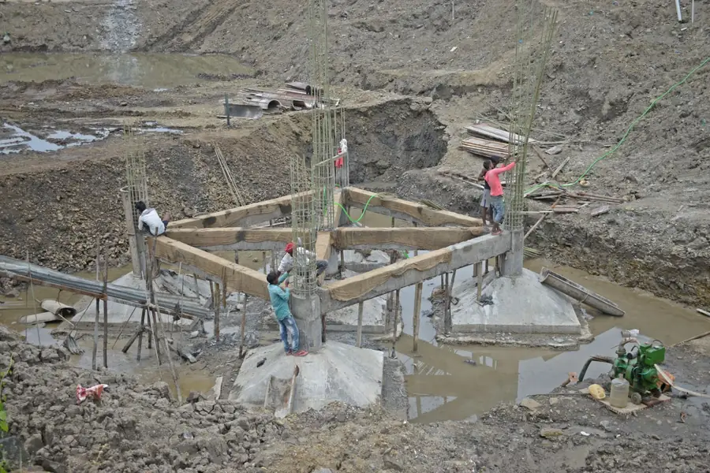

Registered with the CRB · Dodoma
Building and civil works, on a register since 2003.
Jomka Building & Civil Engineering Works is a Dodoma-based contractor registered with the Contractors Registration Board of Tanzania since 2003. The firm holds two registrations, one for building works (B7/1407/8/2003) and one for civil engineering works (C7/0703/09/2003). Both are Class 7, local category, and both are recorded at House No. 1/2, P.O. Box 1192, Dodoma.
- CategoryLocal contractor
- ClassClass 7
- DisciplinesBuilding & Civil
- BaseDodoma, Tanzania
What we build
Five categories of work, one registered team.
Each category below sets out the scope of work we carry out under our CRB registrations, together with imagery of the stage of work involved. Open a category to read exactly what the work covers — from site clearance and foundation excavation through to blockwork, roofing and finishing.


- 2003First registered with CRB
- 2CRB registrations on record
- 7Class, local category
- 5Categories of work
Public register
Two registrations, both issued in 2003.
Building works are registered under B7/1407/8/2003 and civil works under C7/0703/09/2003. Both entries are Class 7, category Local, name Julius Mkwabe and Julius Mkale as managing directors, and give House No. 1/2 and P.O. Box 1192, Dodoma as the company address — all of it checkable on the CRB public register before you engage us.
On site
The stages of work, as they happen.
Survey setting-out, blockwork, machine excavation, roofing and structural concrete — the five categories in practice, from the first peg driven into the plot to the finished roof.






Get in touch
Tell us about the site.
Send the plot location, the category of work you need — building, walling, earthworks, rehabilitation or slab foundation — any drawings you already have, and the dates you are working to. We respond with a written quotation setting out the price and the programme.
Contact Jomka- Physical address
- House No. 1/2, Dodoma
- Postal address
- P.O. Box 1192, Dodoma